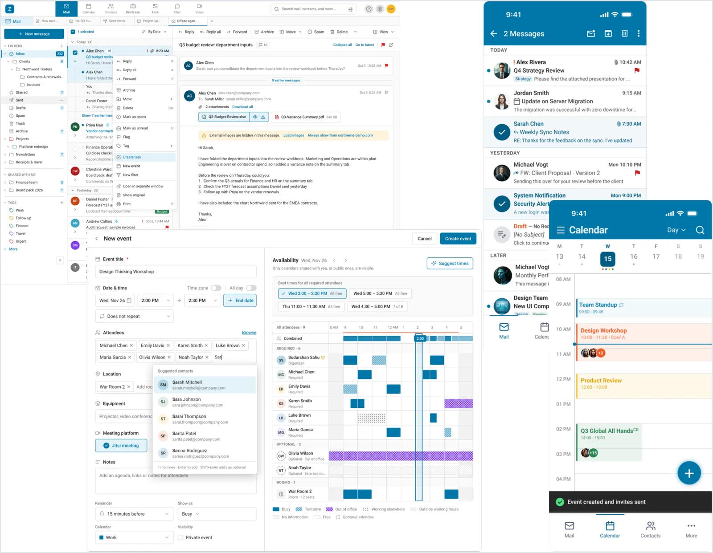

Rebuilding enterprise email trust at scale: one complete, secure productivity suite for pro users who need flexibility and beginners who need simple actions.
Role
Principal Product Designer, sole designer
Company
Global enterprise email company
Scope
Web suite, native mobile, Admin Console, design foundations

60+user jobs ranked by frequency and pain
120+pilot tickets studied
3surfaces led alone: web, mobile, admin
Context
Governments, defence teams and banks run this email suite on their own servers, because their data cannot leave the building. The company thought it had a feature gap. Expert users kept going back to the older UI, so the company had to build and support two products. I was the only designer, with no analytics, no design system, no shared roadmap and a vendor team I did not manage. So first I changed the question.
The problem
Users were not moving to the new UI
Everyone asked what was missing. I asked why experts didn't trust it.
The product keeps no user data, so we had no analytics. I used 60+ user jobs, 120+ pilot tickets and an audit against the older UI, Outlook and Gmail. Most "missing feature" tickets were really "I can't find it". The new UI was not losing to big competitors. It was losing to its own older UI.
This changed how the team saw the problem. It was a trust gap, not a feature gap.
Three users, and one problem loop
Experts went back, so the older UI stayed on. Then the admin could not push the switch, and work stayed in other tools. So fixing one screen would not help. We had to break this loop.
Experts go back
Old UI stays on
Two products
Admin can't push the switch
Trust never builds
The loop.
The real product was in the connections
Each area worked fine alone. The problem was the hand-off between them. Earlier each area was built on its own, so I designed the steps in between.
Hand-off
Before
After
Email to task
Flag it, copy it, write it down
One right-click, email stays attached
Email to meeting
Retype people, guess free times
Opens filled in, with suggested times
Attachment to files
Download, upload to an outside tool
Save it, linked to its email
The decisions
Seven decisions, and what each one cost
Every decision passed one test: does this make experts trust the new product?
I planned the migration before the screens
If we forced the switch, we would lose users again. So I planned three stages, with the admin setting the speed and rollback always on. I rejected shipping the UI first. The first release took longer because of this.
This is the path from two products to one.
Side by sideBoth UIs available
Gentle guideOne small tip, one time
Admin-led switchOld UI read-only when the admin decides
First I brought back the speed for expert users
Mail is where every workflow starts. I brought back right-click and a sticky action bar, and added three density modes, because people cannot use a button they don't know exists. The screen got busier for beginners, so users can choose the density they like.
Daily actions stay visible, with more one right-click away.
They asked for a button, but the need was a home for work
The request was "convert to task", but the new UI had no Tasks area at all. The real job was never missing a follow-up that came by email. I used RICE to show leadership why Tasks came before visual polish, and that changed the order of work.
Follow-ups stay linked to the email they came from.
We could never match them feature by feature, and files were leaving the customer's servers. So now a file stays linked to its email, and versions open like a thread.
People scanned free time by hand and lost the email. Details and live availability now sit on one screen. I rejected a separate scheduling assistant, because controls belong next to what they change.
The mobile version was only a small website. I chose a native app, and built a UI kit, guidelines and a checklist, then reviewed every vendor sprint. I did not manage this team, so clear kits and guidelines were the way to keep the quality.
The vendor built on my kit with only small tweaks.
I also designed for the admin, who can stop the whole switch
Admins are few, but they approve the whole switch. A vendor had reskinned the console, and two internal reviews disagreed. I merged them into one gap list, and set one rule for every table.
I built design foundations, set clear limits with product on what design could not assume, and trained three design teams.
The outcome and impact
How I measure trust without tracking users
The product keeps no user data. So I defined a few signals to measure progress without tracking people.
Signal
The question
Source
Voluntary adoption
Who sets the new UI as default?
Server login records
Going back
How often do pilots return?
Pilot sessions
Flow completion
Is the task done in one flow?
Observed sessions
Admin confidence
Do admins move more teams?
Admin settings
"Can't find it" tickets
Do these go down?
Support tickets
The value: one product to build instead of two, fewer reasons for data to leave, and a native app for enterprise shortlists.
What I learned
The first problem we hear is not always the real problem.
"Fix adoption" was really "rebuild trust". We need to design for the user, the buyer and the admin. No analytics does not stop the work, because we can still learn from people.